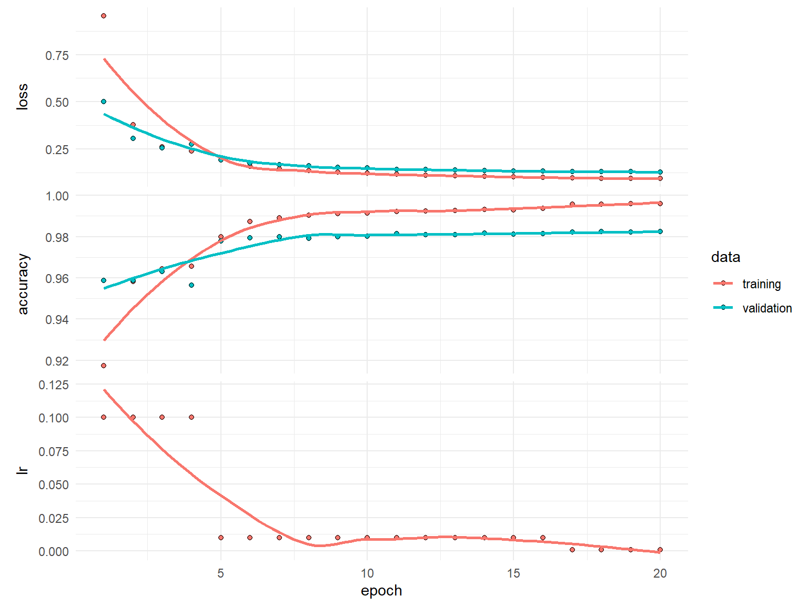

knitr::include_graphics("images/kerasPipeline.png")
This lab has been adapted from the first lab in the Workshop on Deep learning with keras and Tensorflow in R (Rstudio conf. 2020), and has been downladed and re-created to ensure its usability.
The lab is oriented to provide a first contact with Keras in R and presents the main steps required for building training and using a deepl learning model using Keras and R as summarized in the Keras Cheatshhet:
knitr::include_graphics("images/kerasPipeline.png")
The following steps provide a good mental model for tuning a model.
It is important to recall that though they don’t guarantee you’ll find the optimal model; however, it should give you a higher probability of finding a near optimal one.
We’ll demonstrate with one of the most famous benchmark data sets, MNIST. We’ll work with a multi-layer perceptron (MLP), but realize that these steps also translate to other DL models (i.e. CNNs, RNNs, LSTMs).
library(keras) # for modeling
library(tidyverse) # for wrangling & visualization
library(glue) # for string literals
library(reticulate) # Interface to 'Python'keras has many built in data sets (or functions to automatically install data sets). Check out the available datasets with dataset_ + tab.
We’re going to use the MNIST data set which is the “hello world” for learning deep learning! ℹ️
mnist <- dataset_mnist()
str(mnist)List of 2
$ train:List of 2
..$ x: int [1:60000, 1:28, 1:28] 0 0 0 0 0 0 0 0 0 0 ...
..$ y: int [1:60000(1d)] 5 0 4 1 9 2 1 3 1 4 ...
$ test :List of 2
..$ x: int [1:10000, 1:28, 1:28] 0 0 0 0 0 0 0 0 0 0 ...
..$ y: int [1:10000(1d)] 7 2 1 0 4 1 4 9 5 9 ...Our training images (aka features) are stored as 3D arrays:
# 60K images of 28x28 pixels
dim(mnist$train$x)[1] 60000 28 28# pixel values are gray scale ranging from 0-255
range(mnist$train$x)[1] 0 255Notice, however, that the labels, which indicate the “true” number associated with the image are stored as a vector, because per each image (a 2-D array of 28x28) ther is a single number.
# 60K numerical labels
dim(mnist$train$y)[1] 60000# integer values ranging from 0 to 9
range(mnist$train$y)[1] 0 9Check out the first digit
digit <- mnist$train$x[1,,]
digit [,1] [,2] [,3] [,4] [,5] [,6] [,7] [,8] [,9] [,10] [,11] [,12] [,13]
[1,] 0 0 0 0 0 0 0 0 0 0 0 0 0
[2,] 0 0 0 0 0 0 0 0 0 0 0 0 0
[3,] 0 0 0 0 0 0 0 0 0 0 0 0 0
[4,] 0 0 0 0 0 0 0 0 0 0 0 0 0
[5,] 0 0 0 0 0 0 0 0 0 0 0 0 0
[6,] 0 0 0 0 0 0 0 0 0 0 0 0 3
[7,] 0 0 0 0 0 0 0 0 30 36 94 154 170
[8,] 0 0 0 0 0 0 0 49 238 253 253 253 253
[9,] 0 0 0 0 0 0 0 18 219 253 253 253 253
[10,] 0 0 0 0 0 0 0 0 80 156 107 253 253
[11,] 0 0 0 0 0 0 0 0 0 14 1 154 253
[12,] 0 0 0 0 0 0 0 0 0 0 0 139 253
[13,] 0 0 0 0 0 0 0 0 0 0 0 11 190
[14,] 0 0 0 0 0 0 0 0 0 0 0 0 35
[15,] 0 0 0 0 0 0 0 0 0 0 0 0 0
[16,] 0 0 0 0 0 0 0 0 0 0 0 0 0
[17,] 0 0 0 0 0 0 0 0 0 0 0 0 0
[18,] 0 0 0 0 0 0 0 0 0 0 0 0 0
[19,] 0 0 0 0 0 0 0 0 0 0 0 0 0
[20,] 0 0 0 0 0 0 0 0 0 0 0 0 39
[21,] 0 0 0 0 0 0 0 0 0 0 24 114 221
[22,] 0 0 0 0 0 0 0 0 23 66 213 253 253
[23,] 0 0 0 0 0 0 18 171 219 253 253 253 253
[24,] 0 0 0 0 55 172 226 253 253 253 253 244 133
[25,] 0 0 0 0 136 253 253 253 212 135 132 16 0
[26,] 0 0 0 0 0 0 0 0 0 0 0 0 0
[27,] 0 0 0 0 0 0 0 0 0 0 0 0 0
[28,] 0 0 0 0 0 0 0 0 0 0 0 0 0
[,14] [,15] [,16] [,17] [,18] [,19] [,20] [,21] [,22] [,23] [,24] [,25]
[1,] 0 0 0 0 0 0 0 0 0 0 0 0
[2,] 0 0 0 0 0 0 0 0 0 0 0 0
[3,] 0 0 0 0 0 0 0 0 0 0 0 0
[4,] 0 0 0 0 0 0 0 0 0 0 0 0
[5,] 0 0 0 0 0 0 0 0 0 0 0 0
[6,] 18 18 18 126 136 175 26 166 255 247 127 0
[7,] 253 253 253 253 253 225 172 253 242 195 64 0
[8,] 253 253 253 253 251 93 82 82 56 39 0 0
[9,] 253 198 182 247 241 0 0 0 0 0 0 0
[10,] 205 11 0 43 154 0 0 0 0 0 0 0
[11,] 90 0 0 0 0 0 0 0 0 0 0 0
[12,] 190 2 0 0 0 0 0 0 0 0 0 0
[13,] 253 70 0 0 0 0 0 0 0 0 0 0
[14,] 241 225 160 108 1 0 0 0 0 0 0 0
[15,] 81 240 253 253 119 25 0 0 0 0 0 0
[16,] 0 45 186 253 253 150 27 0 0 0 0 0
[17,] 0 0 16 93 252 253 187 0 0 0 0 0
[18,] 0 0 0 0 249 253 249 64 0 0 0 0
[19,] 0 46 130 183 253 253 207 2 0 0 0 0
[20,] 148 229 253 253 253 250 182 0 0 0 0 0
[21,] 253 253 253 253 201 78 0 0 0 0 0 0
[22,] 253 253 198 81 2 0 0 0 0 0 0 0
[23,] 195 80 9 0 0 0 0 0 0 0 0 0
[24,] 11 0 0 0 0 0 0 0 0 0 0 0
[25,] 0 0 0 0 0 0 0 0 0 0 0 0
[26,] 0 0 0 0 0 0 0 0 0 0 0 0
[27,] 0 0 0 0 0 0 0 0 0 0 0 0
[28,] 0 0 0 0 0 0 0 0 0 0 0 0
[,26] [,27] [,28]
[1,] 0 0 0
[2,] 0 0 0
[3,] 0 0 0
[4,] 0 0 0
[5,] 0 0 0
[6,] 0 0 0
[7,] 0 0 0
[8,] 0 0 0
[9,] 0 0 0
[10,] 0 0 0
[11,] 0 0 0
[12,] 0 0 0
[13,] 0 0 0
[14,] 0 0 0
[15,] 0 0 0
[16,] 0 0 0
[17,] 0 0 0
[18,] 0 0 0
[19,] 0 0 0
[20,] 0 0 0
[21,] 0 0 0
[22,] 0 0 0
[23,] 0 0 0
[24,] 0 0 0
[25,] 0 0 0
[26,] 0 0 0
[27,] 0 0 0
[28,] 0 0 0Lets plot the first digit and compare to the above matrix.
plot(as.raster(digit, max = 255))The associated label confirms it is number 5.
mnist$train$y[1][1] 5Now lets check out the first 100 digits
par(mfrow = c(10, 10), mar = c(0,0,0,0))
for (i in 1:100) {
plot(as.raster(mnist$train$x[i,,], max = 255))
}When we work with keras:
%<-% for object unpacking (see ?zeallot::%<-%)c(c(train_images, train_labels), c(test_images, test_labels)) %<-% mnist
# the above is the same as
# train_images <- mnist$train$x
# train_labels <- mnist$train$y
# test_images <- mnist$test$x
# test_labels <- mnist$test$yThe shape of our data is dependent on the type of DL model we are training. Multi Layer Perceptrons (MLPs) require our data to be in a 2D tensor (aka matrix); however, our data are currently in a 3D tensor.
We can reshape our tensor from 3D to 2D. Much like a matrix can be flattened to a vector:
m <- matrix(1:9, nrow = 3)
m [,1] [,2] [,3]
[1,] 1 4 7
[2,] 2 5 8
[3,] 3 6 9# flattened matrix
as.vector(m)[1] 1 2 3 4 5 6 7 8 9# Warning of how you invert the process !!!
# matrix(as.vector(m), nrow=3)We can reshape a 3D array to a 2D array with array_reshape()
knitr::include_graphics("images/reshape.png")# reshape 3D tensor (aka array) to a 2D tensor (aka matrix)
train_images <- array_reshape(train_images, c(60000, 28 * 28))
test_images <- array_reshape(test_images, c(10000, 28 * 28))
# our training data is now a matrix with 60K observations and
# 784 features (28 pixels x 28 pixels = 784)
str(train_images) num [1:60000, 1:784] 0 0 0 0 0 0 0 0 0 0 ...Since we are dealing with a multi-classification problem where the target ranges from 0-9, we’ll reformat the labels with to_categorical().
This function takes a vector of \(N\) integers of \(k\) distinct classes and creates a matrix of \(N\) rows and \(k\) columns in such a way that if the nth value in the original vector, was a 7, now the nth row, column 8, in the transformed matrix, has a 1 and the remaining columns of this row contain a zero.
Note: column 1 refers to the digit “0”, column 2 refers to the digit “1”, etc.
class(train_labels)[1] "array"dim(train_labels)[1] 60000train_labels <- to_categorical(train_labels)
test_labels <- to_categorical(test_labels)
class(train_labels)[1] "matrix" "array" dim(train_labels)[1] 60000 10head(train_labels) [,1] [,2] [,3] [,4] [,5] [,6] [,7] [,8] [,9] [,10]
[1,] 0 0 0 0 0 1 0 0 0 0
[2,] 1 0 0 0 0 0 0 0 0 0
[3,] 0 0 0 0 1 0 0 0 0 0
[4,] 0 1 0 0 0 0 0 0 0 0
[5,] 0 0 0 0 0 0 0 0 0 1
[6,] 0 0 1 0 0 0 0 0 0 0When applying DL models, our feature values should not be relatively large compared to the randomized initial weights and all our features should take values in roughly the same range.
When features have large or widely varying values, large gradient updates can be triggered that will prevent the network from converging
Tips:
When all features have the same value range (i.e. images), we can standardize values between 0-1.
When features varying in range from one another (i.e. age, height, longitude) normalize each feature to have mean of 0 and standard deviation of 1 (?scale())
# all our features (pixels) range from 0-255
range(train_images)[1] 0 255# standardize train and test features
train_images <- train_images / 255
test_images <- test_images / 255Although this dataset is not ordered, it is a good practice to randomize data so that our train and validation datasets are properly represented.
obs <- nrow(train_images)
set.seed(123)
randomize <- sample(seq_len(obs), size = obs, replace = FALSE)
train_images <- train_images[randomize, ]
train_labels <- train_labels[randomize, ]Once the data has been prepared we can proceed to train some DL models!!
Epoch: A complete pass through the entire training dataset.
Batch: A subset of the training dataset used to update the model’s parameters.
Mini-batch: A smaller subset of the training dataset used for parameter updates.
The learning rate is the most important hyperparameter to get right but before I tuning it, I like to find a batch size that balances:
Tips: start with…
mean(n_features + n_response_classes),# get number of features
n_feat <- ncol(train_images)
# 1. Define model architecture
model <- keras_model_sequential() %>%
layer_dense(units = 512, activation = 'relu',
input_shape = n_feat) %>%
layer_dense(units = 10, activation = 'softmax')
# 1. Define model architecture
model <- keras_model_sequential() %>%
layer_dense(units = 512, activation = 'relu', input_shape = c(n_feat)) %>%
layer_dense(units = 10, activation = 'softmax')
# 2. Define how our model is going to learn
model %>% compile(
loss = "categorical_crossentropy",
optimizer = "sgd",
metrics = "accuracy"
)
summary(model)Model: "sequential_1"
________________________________________________________________________________
Layer (type) Output Shape Param #
================================================================================
dense_3 (Dense) (None, 512) 401920
dense_2 (Dense) (None, 10) 5130
================================================================================
Total params: 407,050
Trainable params: 407,050
Non-trainable params: 0
________________________________________________________________________________Let’s train our model with the default batch size of 32.
# 3. Train our model
history <- model %>% fit(
train_images, train_labels,
validation_split = 0.2
)history
Final epoch (plot to see history):
loss: 0.1699
accuracy: 0.953
val_loss: 0.1778
val_accuracy: 0.9486 plot(history)Now retrain the same model but try with batch sizes of 16, 128, 512 while leaving everything else the same. How do the results (loss, accuracy, and compute time) compare?
# define model architecture
model <- keras_model_sequential() %>%
layer_dense(units = 512, activation = 'relu', input_shape = n_feat) %>%
layer_dense(units = 10, activation = 'softmax')
# define how the model is gonig to learn
model %>% compile(
loss = "categorical_crossentropy",
optimizer = "sgd",
metrics = "accuracy"
)
history <- model %>% fit(
train_images, train_labels,
validation_split = 0.2,
____ = ____
)Once we’ve picked an adequate batch size, next we want to start tuning the learning rate. There are two main considerations:
Adaptive learning rates help to escape “saddle points”.


The primary adaptive learning rates include:
SGD (Stochastic Gradient Descent): Basic optimization algorithm that updates model parameters based on the negative gradient of the loss function.
SGD with momentum: Extends SGD by incorporating a momentum term, which helps accelerate learning and maintain direction in the presence of noisy or sparse gradients.
nAG (Nesterov Accelerated Gradient): Variant of SGD that improves convergence speed by calculating the gradient at a lookahead position, providing more accurate gradient information.
Adagrad (Adaptive Gradient): Adapts the learning rate for each parameter based on the historical gradients, giving more weight to parameters with smaller gradients.
Adadelta: Extension of Adagrad that dynamically adjusts the learning rate using the ratio of accumulated gradients to accumulated parameter updates.
RMSprop (Root Mean Square Propagation): Adaptive learning rate algorithm that normalizes learning rates by dividing them by an exponentially weighted moving average of squared gradients.
These optimization techniques offer different strategies for updating model parameters, improving convergence and adapting the learning rate to optimize model performance.
See ?optimizer_sgd() or ?optimizer_rmsprop()
See https://ruder.io/optimizing-gradient-descent/ for more details
Retrain our DL model using:
optimizer_sgd())
optimizer_rmsprop())
optimizer_adam())
model <- keras_model_sequential() %>%
layer_dense(units = 512, activation = 'relu', input_shape = n_feat) %>%
layer_dense(units = 10, activation = 'softmax')
model %>% compile(
loss = "categorical_crossentropy",
optimizer = ____,
metrics = "accuracy"
)
history <- model %>% fit(
train_images, train_labels,
validation_split = 0.2,
batch_size = 128
)When training a model, sometimes we want to:
Keras provides a suite of tools called _callbacks that help us to monitor, control, and customize the training procedure.
We often don’t know how many epochs we’ll need to reach a minimum loss. The early stopping callback allows us to automatically stop training after we experience no improvement in our loss after patience number of epochs.
If you are going to use the model after training you always want to retain the “best” model, which is the model with the lowest loss. restore_best_weights will restore the weights for this “best” model even after you’ve passed it by n epochs.
Sometimes your model will stall on a low validation loss resulting in a tie. Even with early stopping the model will continue to train for all the epochs. min_delta allows you to state some small value that the loss must improve by otherwise it will stop.
model <- keras_model_sequential() %>%
layer_dense(units = 512, activation = 'relu', input_shape = n_feat) %>%
layer_dense(units = 10, activation = 'softmax')
model %>% compile(
loss = "categorical_crossentropy",
optimizer = optimizer_sgd(learning_rate = 0.1,
momentum = 0.9),
metrics = "accuracy"
)
history <- model %>% fit(
train_images, train_labels,
validation_split = 0.2,
batch_size = 128,
epochs = 20,
callback = callback_early_stopping(patience = 3,
restore_best_weights = TRUE,
min_delta = 0.0001)
)history
Final epoch (plot to see history):
loss: 0.003236
accuracy: 0.9998
val_loss: 0.06499
val_accuracy: 0.9832 Note how we did not train for all the epochs…only until our loss didn’t improve by 0.0001 for 3 consistent epochs.
plot(history)Although adaptive learning rate optimizers adjust the velocity of weight updates depending on the loss surface, we can also incorporate additional ways to modify the learning rate “on the fly”.
Learning rate decay reduces the learning rate at each epoch. Note the decay argument in ?optimizer_xxx().
There has been some great research on cyclical learning rates (see https://arxiv.org/abs/1506.01186). You can incorporate custom learning rates such as this with callback_learning_rate_scheduler(). This is more advanced but definitely worth reading.
A simpler, and very practical approach, is to reduce the learning rate after the model has stopped improving with callback_reduce_lr_on_plateau(). This approach allows the model to tell us when to reduce the learning rate.
When using decay or callback_reduce_lr_on_plateau(), you can usually increase the base learning rate so that you learn quickly early on and then the learning rate will reduce so you can take smaller steps as you approach the minimum loss.
model <- keras_model_sequential() %>%
layer_dense(units = 512, activation = 'relu', input_shape = n_feat) %>%
layer_dense(units = 10, activation = 'softmax')
model %>% compile(
loss = "categorical_crossentropy",
optimizer = optimizer_sgd(learning_rate = 0.1, momentum = 0.9),
metrics = "accuracy"
)
history <- model %>% fit(
train_images, train_labels,
validation_split = 0.2,
batch_size = 128,
epochs = 20,
callback = list(
callback_early_stopping(patience = 3, restore_best_weights = TRUE, min_delta = 0.0001),
callback_reduce_lr_on_plateau(patience = 1, factor = 0.1)
)
)history
Final epoch (plot to see history):
loss: 0.007838
accuracy: 0.9994
val_loss: 0.06073
val_accuracy: 0.9835
lr: 0.0001 plot(history)plot(history$metrics$lr)Now that we have found a pretty good learning rate and we have good control over our training procedure with callbacks, we can start to assess how the capacity of our model effects performance.
The capacity of a deep learning model refers to its ability to learn complex patterns in the data.
It is determined by the architecture, including the number of layers and neurons.
Higher capacity allows the model to capture more intricate details, but it also increases the risk of overfitting.
Finding the right balance is important for optimal performance.
Capacity is usually controlled in two ways:
Explore different model capacities while all other parameters constant. Try increasing
model <- keras_model_sequential() %>%
___________ %>%
layer_dense(units = 10, activation = 'softmax')
model %>% compile(
loss = "categorical_crossentropy",
optimizer = optimizer_sgd(lr = 0.1, momentum = 0.9),
metrics = "accuracy"
)
history <- model %>% fit(
train_images, train_labels,
validation_split = 0.2,
batch_size = 128,
epochs = 20,
callback = list(
callback_early_stopping(patience = 3, restore_best_weights = TRUE, min_delta = 0.0001),
callback_reduce_lr_on_plateau(patience = 1, factor = 0.1)
)
)As we start to experiment more, it becomes harder to organize and compare our results. Let’s make it more efficient by:
callback_tensorboard() which allows us to save and visually compare results.There is another approach to performing grid searches. See the extras notebook https://rstudio-conf-2020.github.io/dl-keras-tf/notebooks/imdb-grid-search.nb.html for details.
train_model <- function(n_units, n_layers, log_to) {
# Create a model with a single hidden input layer
model <- keras_model_sequential() %>%
layer_dense(units = n_units, activation = "relu", input_shape = n_feat)
# Add additional hidden layers based on input
if (n_layers > 1) {
for (i in seq_along(n_layers - 1)) {
model %>% layer_dense(units = n_units, activation = "relu")
}
}
# Add final output layer
model %>% layer_dense(units = 10, activation = "softmax")
# compile model
model %>% compile(
loss = "categorical_crossentropy",
optimizer = optimizer_sgd(learning_rate = 0.1, momentum = 0.9),
metrics = "accuracy"
)
# train model and store results with callback_tensorboard()
history <- model %>% fit(
train_images, train_labels,
validation_split = 0.2,
batch_size = 128,
epochs = 20,
callback = list(
callback_early_stopping(patience = 3, restore_best_weights = TRUE, min_delta = 0.0001),
callback_reduce_lr_on_plateau(patience = 1, factor = 0.1),
callback_tensorboard(log_dir = log_to)
),
verbose = FALSE
)
return(history)
}Now we can create a grid for various model capacities. We include an ID for each model, which we will use to save our results within callback_tensorboard().
grid <- expand_grid(
units = c(128, 256, 512, 1024),
layers = c(1:3)
) %>%
mutate(id = paste0("mlp_", layers, "_layers_", units, "_units"))
grid# A tibble: 12 × 3
units layers id
<dbl> <int> <chr>
1 128 1 mlp_1_layers_128_units
2 128 2 mlp_2_layers_128_units
3 128 3 mlp_3_layers_128_units
4 256 1 mlp_1_layers_256_units
5 256 2 mlp_2_layers_256_units
6 256 3 mlp_3_layers_256_units
7 512 1 mlp_1_layers_512_units
8 512 2 mlp_2_layers_512_units
9 512 3 mlp_3_layers_512_units
10 1024 1 mlp_1_layers_1024_units
11 1024 2 mlp_2_layers_1024_units
12 1024 3 mlp_3_layers_1024_unitsNow we can loop through each model capacity combination and train our models.
This will take a few minutes so this is a good time to save your work and take a break.
system.time(
for (row in seq_len(nrow(grid))) {
# get parameters
units <- grid[[row, "units"]]
layers <- grid[[row, "layers"]]
file_path <- paste0("mnist/", grid[[row, "id"]])
# provide status update
cat(layers, "hidden layer(s) with", units, "neurons: ")
# train model
m <- train_model(n_units = units, n_layers = layers, log_to = file_path)
min_loss <- min(m$metrics$val_loss, na.rm = TRUE)
# update status with loss
cat(min_loss, "\n", append = TRUE)
}
)1 hidden layer(s) with 128 neurons: 0.07069184
2 hidden layer(s) with 128 neurons: 0.06938207
3 hidden layer(s) with 128 neurons: 0.06946184
1 hidden layer(s) with 256 neurons: 0.06554866
2 hidden layer(s) with 256 neurons: 0.06640807
3 hidden layer(s) with 256 neurons: 0.07036863
1 hidden layer(s) with 512 neurons: 0.06244506
2 hidden layer(s) with 512 neurons: 0.06106765
3 hidden layer(s) with 512 neurons: 0.06557445
1 hidden layer(s) with 1024 neurons: 0.06027493
2 hidden layer(s) with 1024 neurons: 0.05934745
3 hidden layer(s) with 1024 neurons: 0.05973132 user system elapsed
128.89 75.78 287.67 Our results suggest that larger width models tend to perform better but it is unclear if deeper models add much benefit. However, to get more clarity we can analyze the learning rates with tensorboard().
Note that callback_tensorboard() saved all the model runs in /mnist subdirectory.
tensorboard("mnist")Started TensorBoard at http://127.0.0.1:3383 Retrain the model with:
model <- keras_model_sequential() %>%
___________ %>%
___________
model %>% compile(
loss = "categorical_crossentropy",
optimizer = optimizer_sgd(lr = 0.1, momentum = 0.9),
metrics = "accuracy"
)
history <- model %>% fit(
train_images, train_labels,
validation_split = 0.2,
batch_size = 128,
epochs = 20,
callback = list(
callback______(patience = _____, restore_best_weights = TRUE, min_delta = 0.0001),
callback______(patience = _____, factor = 0.1)
)
)Often, once we’ve found a model that minimizes the loss, there is still some overfitting that is occuring…sometimes a lot.
So our next objective is to try flatten the validation loss learning curve and bring it as close to the training loss curve as possible.
A common way to mitigate overfitting is to put constraints on the complexity of a network by forcing its weights to take on small values, which makes the distribution of weight values more regular.
This is called weight regularization and its done by adding to the loss function of the network a cost associated with having large weights.
If you a familiar with regularized regression ℹ️ (lasso, ridge, elastic nets) then weight regularization is essentially the same thing. ℹ️
\[Loss = MSE + \lambda \sum^p_{j=1} w^2_j\]
patience parameter for early stopping if this is noticable.model <- keras_model_sequential() %>%
layer_dense(
units = 512, activation = "relu", input_shape = n_feat,
kernel_regularizer = regularizer_l2(l = 0.001) # regularization parameter
) %>%
layer_dense(
units = 512, activation = "relu",
kernel_regularizer = regularizer_l2(l = 0.001) # regularization parameter
) %>%
layer_dense(units = 10, activation = "softmax")
model %>% compile(
loss = "categorical_crossentropy",
optimizer = optimizer_sgd(learning_rate = 0.1,
momentum = 0.9),
metrics = "accuracy"
)
history <- model %>% fit(
train_images, train_labels,
validation_split = 0.2,
batch_size = 128,
epochs = 20,
callback = list(
callback_early_stopping(patience = 3, restore_best_weights = TRUE, min_delta = 0.0001),
callback_reduce_lr_on_plateau(patience = 1, factor = 0.1)
)
)history
Final epoch (plot to see history):
loss: 0.09333
accuracy: 0.996
val_loss: 0.1284
val_accuracy: 0.9823
lr: 0.001 plot(history)
Dropout is one of the most effective and commonly used regularization techniques for neural networks.
Dropout applied to a layer randomly drops out (sets to zero) a certain percentage of the output features of that layer.
By randomly dropping some of a layer’s outputs we minimize the chance of fitting patterns to noise in the data, a common cause of overfitting.
Dropout rates typically ranges between 0.2-0.5. Sometimes higher rates are necessary but note that you will get a warning when supplying rate > 0.5.
The higher the dropout rate, the slower the convergence so you may need to increase the number of epochs.
Its common to apply dropout after each hidden layer and with the same rate;
however, this is not necessary.
model <- keras_model_sequential() %>%
layer_dense(units = 512, activation = "relu", input_shape = n_feat) %>%
layer_dropout(0.3) %>% # regularization parameter
layer_dense(units = 512, activation = "relu") %>%
layer_dropout(0.3) %>% # regularization parameter
layer_dense(units = 10, activation = "softmax")
model %>% compile(
loss = "categorical_crossentropy",
optimizer = optimizer_sgd(learning_rate = 0.1,
momentum = 0.9),
metrics = "accuracy"
)
history <- model %>% fit(
train_images, train_labels,
validation_split = 0.2,
batch_size = 128,
epochs = 20,
callback = list(
callback_early_stopping(patience = 3, restore_best_weights = TRUE, min_delta = 0.0001),
callback_reduce_lr_on_plateau(patience = 1, factor = 0.1)
)
) %>%
as.data.frame()history epoch value metric data
1 1 3.242483e-01 loss training
2 2 1.482577e-01 loss training
3 3 1.137299e-01 loss training
4 4 9.758937e-02 loss training
5 5 7.881726e-02 loss training
6 6 6.788949e-02 loss training
7 7 6.261241e-02 loss training
8 8 4.050179e-02 loss training
9 9 3.128683e-02 loss training
10 10 2.672179e-02 loss training
11 11 2.508097e-02 loss training
12 12 2.197508e-02 loss training
13 13 2.042278e-02 loss training
14 14 2.059718e-02 loss training
15 15 NA loss training
16 16 NA loss training
17 17 NA loss training
18 18 NA loss training
19 19 NA loss training
20 20 NA loss training
21 1 8.989375e-01 accuracy training
22 2 9.537917e-01 accuracy training
23 3 9.648333e-01 accuracy training
24 4 9.694791e-01 accuracy training
25 5 9.750834e-01 accuracy training
26 6 9.785417e-01 accuracy training
27 7 9.797083e-01 accuracy training
28 8 9.865834e-01 accuracy training
29 9 9.901250e-01 accuracy training
30 10 9.915208e-01 accuracy training
31 11 9.917708e-01 accuracy training
32 12 9.930000e-01 accuracy training
33 13 9.931250e-01 accuracy training
34 14 9.934375e-01 accuracy training
35 15 NA accuracy training
36 16 NA accuracy training
37 17 NA accuracy training
38 18 NA accuracy training
39 19 NA accuracy training
40 20 NA accuracy training
41 1 1.419821e-01 loss validation
42 2 1.198308e-01 loss validation
43 3 9.774947e-02 loss validation
44 4 8.783271e-02 loss validation
45 5 8.001570e-02 loss validation
46 6 7.208887e-02 loss validation
47 7 7.537550e-02 loss validation
48 8 6.350064e-02 loss validation
49 9 6.203371e-02 loss validation
50 10 6.138184e-02 loss validation
51 11 6.125287e-02 loss validation
52 12 6.218536e-02 loss validation
53 13 6.142388e-02 loss validation
54 14 6.137693e-02 loss validation
55 15 NA loss validation
56 16 NA loss validation
57 17 NA loss validation
58 18 NA loss validation
59 19 NA loss validation
60 20 NA loss validation
61 1 9.568334e-01 accuracy validation
62 2 9.630000e-01 accuracy validation
63 3 9.705000e-01 accuracy validation
64 4 9.735833e-01 accuracy validation
65 5 9.779167e-01 accuracy validation
66 6 9.800833e-01 accuracy validation
67 7 9.792500e-01 accuracy validation
68 8 9.827500e-01 accuracy validation
69 9 9.837500e-01 accuracy validation
70 10 9.838333e-01 accuracy validation
71 11 9.838333e-01 accuracy validation
72 12 9.841667e-01 accuracy validation
73 13 9.843333e-01 accuracy validation
74 14 9.843333e-01 accuracy validation
75 15 NA accuracy validation
76 16 NA accuracy validation
77 17 NA accuracy validation
78 18 NA accuracy validation
79 19 NA accuracy validation
80 20 NA accuracy validation
81 1 1.000000e-01 lr training
82 2 1.000000e-01 lr training
83 3 1.000000e-01 lr training
84 4 1.000000e-01 lr training
85 5 1.000000e-01 lr training
86 6 1.000000e-01 lr training
87 7 1.000000e-01 lr training
88 8 1.000000e-02 lr training
89 9 1.000000e-02 lr training
90 10 1.000000e-02 lr training
91 11 1.000000e-02 lr training
92 12 1.000000e-02 lr training
93 13 9.999999e-04 lr training
94 14 9.999999e-05 lr training
95 15 NA lr training
96 16 NA lr training
97 17 NA lr training
98 18 NA lr training
99 19 NA lr training
100 20 NA lr trainingplot(history)At this point, we have a pretty good model. However, often, iterating over these steps can improve model performance even further. For brevity, we’ll act as if we have found a sufficient solution.
Once a final model is chosen, we can evaluate the model on our test set to provide us with a accurate expectation of our generalization error. Our goal is that our test error is very close to our validation error.
model %>% evaluate(test_images, test_labels, verbose = FALSE) loss accuracy
0.05530928 0.98350000 To understand our model’s performance across the different response classes, we can assess a confusion matrix ℹ️.
First, we need to predict our classes and also get the actual response values.
predictions <- model %>% predict(test_images) %>% k_argmax()
actual <- mnist$test$yWe can see the number of missed predictions in our test set
library(reticulate)
predictions <- as.array(predictions)
missed_predictions <- sum(predictions != actual)
missed_predictions[1] 165We can use caret::confusionMatrix() to get our confusion matrix. We can see which digits our model confuses the most by analyzing the confusion matrix.
caret::confusionMatrix(factor(predictions), factor(actual))Confusion Matrix and Statistics
Reference
Prediction 0 1 2 3 4 5 6 7 8 9
0 971 0 4 0 1 2 3 1 4 1
1 1 1128 0 0 1 0 3 5 0 2
2 0 1 1017 4 2 0 0 7 3 0
3 0 2 2 993 1 7 0 1 3 3
4 1 0 1 0 965 0 3 0 1 9
5 0 1 1 4 0 874 7 0 3 2
6 3 2 2 0 3 2 940 0 2 1
7 1 0 3 3 1 1 1 1009 3 4
8 2 1 2 5 2 2 1 2 952 1
9 1 0 0 1 6 4 0 3 3 986
Overall Statistics
Accuracy : 0.9835
95% CI : (0.9808, 0.9859)
No Information Rate : 0.1135
P-Value [Acc > NIR] : < 2.2e-16
Kappa : 0.9817
Mcnemar's Test P-Value : NA
Statistics by Class:
Class: 0 Class: 1 Class: 2 Class: 3 Class: 4 Class: 5
Sensitivity 0.9908 0.9938 0.9855 0.9832 0.9827 0.9798
Specificity 0.9982 0.9986 0.9981 0.9979 0.9983 0.9980
Pos Pred Value 0.9838 0.9895 0.9836 0.9812 0.9847 0.9798
Neg Pred Value 0.9990 0.9992 0.9983 0.9981 0.9981 0.9980
Prevalence 0.0980 0.1135 0.1032 0.1010 0.0982 0.0892
Detection Rate 0.0971 0.1128 0.1017 0.0993 0.0965 0.0874
Detection Prevalence 0.0987 0.1140 0.1034 0.1012 0.0980 0.0892
Balanced Accuracy 0.9945 0.9962 0.9918 0.9905 0.9905 0.9889
Class: 6 Class: 7 Class: 8 Class: 9
Sensitivity 0.9812 0.9815 0.9774 0.9772
Specificity 0.9983 0.9981 0.9980 0.9980
Pos Pred Value 0.9843 0.9834 0.9814 0.9821
Neg Pred Value 0.9980 0.9979 0.9976 0.9974
Prevalence 0.0958 0.1028 0.0974 0.1009
Detection Rate 0.0940 0.1009 0.0952 0.0986
Detection Prevalence 0.0955 0.1026 0.0970 0.1004
Balanced Accuracy 0.9898 0.9898 0.9877 0.9876We can also visualize this with the following:
tibble(
actual,
predictions
) %>%
filter(actual != predictions) %>%
count(actual, predictions) %>%
mutate(perc = n / n() * 100) %>%
filter(n > 1) %>%
ggplot(aes(actual, predictions, size = n)) +
geom_point(shape = 15, col = "#9F92C6") +
scale_x_continuous("Actual Target", breaks = 0:9) +
scale_y_continuous("Prediction", breaks = 0:9) +
scale_size_area(breaks = c(2, 5, 10, 15), max_size = 5) +
coord_fixed() +
ggtitle(paste(missed_predictions, "mismatches")) +
theme(panel.grid.minor = element_blank()) +
labs(caption = 'Adapted from Rick Scavetta')Lastly, lets check out those mispredicted digits.
missed <- which(predictions != actual)
plot_dim <- ceiling(sqrt(length(missed)))
par(mfrow = c(plot_dim, plot_dim), mar = c(0,0,0,0))
for (i in missed) {
plot(as.raster(mnist$test$x[i,,], max = 255))
}If we look at the predicted vs actual we can reason about why our model mispredicted some of the digits.
par(mfrow = c(4, 4), mar = c(0,0,2,0))
for (i in missed[1:16]) {
plot(as.raster(mnist$test$x[i,,], max = 255))
title(main = paste("Predicted:", predictions[i]))
}Follow these steps and guidelines when tuning your DL model: